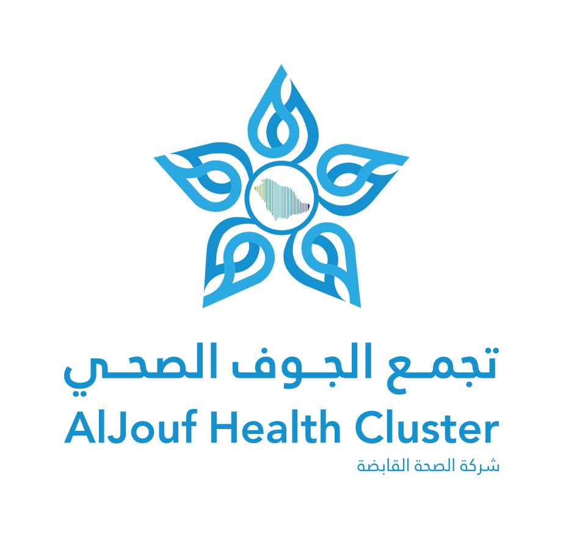

اكتبه بطريقتك: سؤال، شيء مقلقك، صعوبة تواجهك، فكرة، أو معلومة سمعتها وتبي تتأكد منها.
١ وش نوع مشاركتك؟ (اختياري)
٢ اكتبها هنا
افصل البطاقة وسلّمها لسفير التغيير، أو ضعها في صندوق الأسئلة.

جسر التحولصوت الموظف
عن الانتقال إلى شركة الصحة القابضة
كل سؤال يستحق أن يُطرح. اكتب اللي ودّك تفهمه أو تتأكد منه،
ويوصل صوتك لفريق التحول.